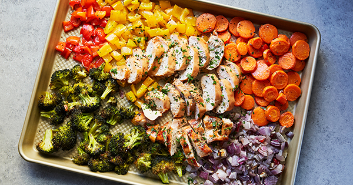

Foil Pack Chicken and Rainbow Veggies

New Year, New Me: High Protein Meal
Get your New Year started right with this easy-to-make recipe.
This is my usual go-to meal when I don't really feel like cooking.
Ingredients
- 1 red oinion, diced
- 2 cups broccoli florets
- 1 yellow bell pepper, sliced
- 2 cups baby carrots
- 1 1/2 cups cherry tomatoes
- 3 Tbs olive oil
- salt, to taste
- pepper, to taste
- 10 sprigs fresh thyme
- 3 cloves garlic
Steps
- Preheat oven to 400 degrees
- Place red onion, broccoli, yellow bell pepper, baby carrots,
and cherry tomatoes evenly on a baking tray. (Try not to let
the vegetables overlap too much so they roast properly.)
- Season with olive oil, salt, and pepper (to taste).
- Add sprigs of thyme and garlice clove halves on top of the vegetabels.
- Teat off four pieces of aluminum foil, approvimately 12 in x 12 in.
- Lay down the foil and place the chicken breast in the center
for each one">
- Season both sides of chicken with olive oil, salt, pepper, and
paprika (all to taste).
- Add sprigs of thymne and garlice clove on top of each chicken breast.
- Bring the top and bottom edge of the foil into the center and fold
a couple of times. Fold in the left and right sides a couple of times
to seal the foil pack.
- Place all 4 chicken foil packs on a baking tray.
- Bake for 30 minutes.
- Enjoy!